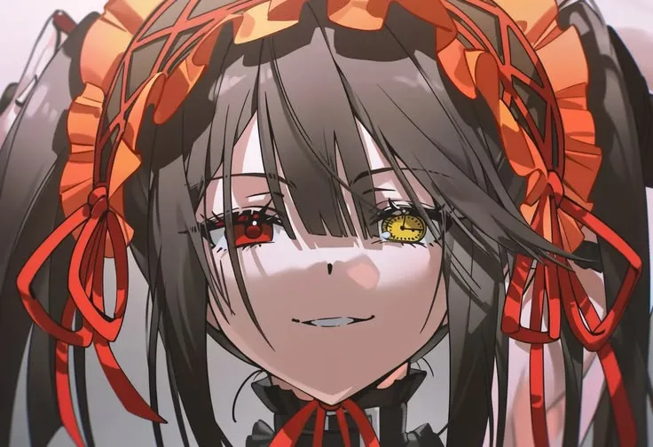
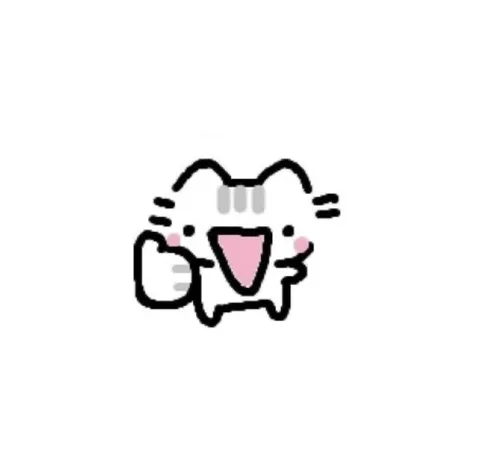
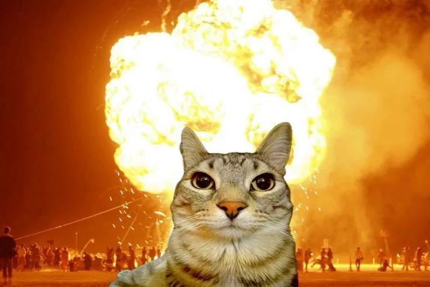

Gampang penasaran
Saya mulai dari rasa ingin tahu. Satu topik baru bisa langsung membuat saya duduk berjam-jam untuk mencobanya.
Saya orangnya gampang penasaran. Kalau tertarik pada sesuatu, langsung saya coba. Kalau sudah mulai bosan, saya ganti ke hal lain. Website ini contohnya.

Saya mendalami teknologi informasi dengan cara yang sederhana: coba dulu, perbaiki belakangan.
Saya mulai dari rasa ingin tahu. Satu topik baru bisa langsung membuat saya duduk berjam-jam untuk mencobanya.
Website ini saya buat dengan bantuan AI. Hasilnya belum sempurna, dan itu bagian dari proses belajarnya.
Kalau satu hal sudah terasa membosankan, saya pindah ke hal berikutnya. Semua yang sempat saya coba ikut membentuk saya.
Beberapa gambar yang bikin saya senyum.


